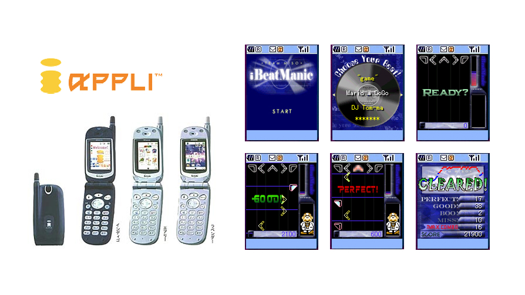

The beginning
Jakarta, Indonesia
Where I was born and grew up. Went to school in Singapore for a while, then left for Atlanta to study Computer Science at Georgia Tech. Didn't know then that it would be over a decade before I'd properly call Jakarta home again.


School years
Singapore
School in Singapore before heading off to the US. A city that's hard not to admire — efficient, international, always building something. I'd come back to it twice more as an adult, each time for a different reason.


1997 – 2001
Atlanta, USA
Georgia Tech. Computer Science. Four years of figuring out how to live far from home, write decent code, and navigate an American university as a kid from Southeast Asia. Graduated in 2001 and headed straight to Tokyo.



2001 – 2014
Tokyo, Japan
Thirteen years. The longest I've lived anywhere outside Indonesia. Started as a fresh grad at a Japanese tech company, became a salaryman, then slowly went independent as an indie iOS developer. Tokyo taught me how to work with precision, how to be patient, and how to find beauty in the details. I miss the convenience stores. I miss the trains. I really miss the food.
Built apps that got featured by Apple. Worked on a dog translator for Takara Tomy. Helped a company go public. Collaborated with publishers and academics. Went from junior engineer to partner. Good years.


2014 – 2020
Jakarta, Indonesia
Came back home after 13 years in Japan. Built Mirai Technologies from the ground up — a mobile app agency, a real team, proper clients. Jakarta had changed a lot while I was gone. So had I. The startup scene was growing. The iOS community was small but hungry — I'd been running the Jakarta iOS Meetup since 2013, even while still in Tokyo.
The agency did well. Eventually got acquired by a Japanese corporation. Full circle, in a way.


2020
Singapore (again)
Joined the Antler startup incubator program. Built a startup from scratch in four months. Met co-founders, pitched ideas, got funded. Then the world locked down. We adapted.


2020 – 2022
Taiwan
Port Remote's home base for most of its life. Taiwan during Covid was a strange and surprisingly calm place to build a company. Great food. Friendly people. Decent internet. We worked, we iterated, we survived. The app eventually got traction and caught the attention of a Korean company.


Aug 2022 – Jan 2023
South Korea
Six months in Seoul for the handover. Korea is fast, intense, and proud — a culture that takes building seriously. I got to experience that from the inside. Also discovered a deep appreciation for Korean food that I'm still working through, one dish at a time.


2025 – present
Jakarta, Indonesia
Home again, for real this time. Mentoring at Apple Developer Academy, organizing meetups, building a Korean speaking practice app because apparently Korea followed me home. Working on talks I want to give. Figuring out what the next chapter looks like.
Three companies. A LEGO robot. Still writing code.